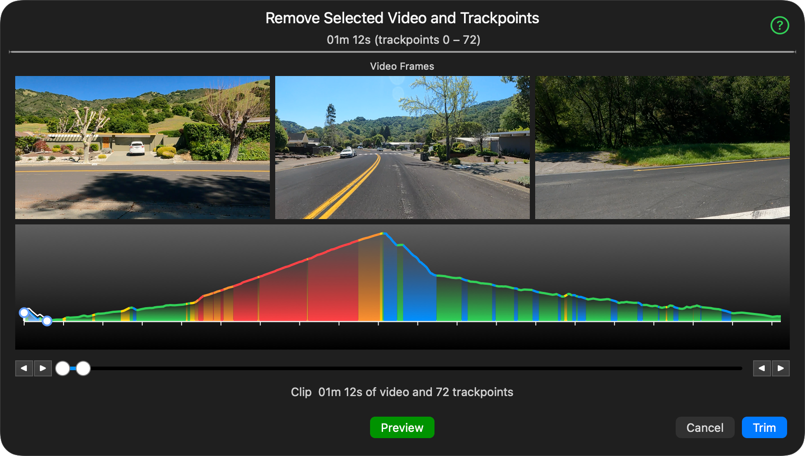

This editor removes a selected range of video and its associated trackpoints.
Adjust the range using the elevation graph or the range slider, and preview how the video will look after the cut.
Move your pointer over the images above to see feature explanations.